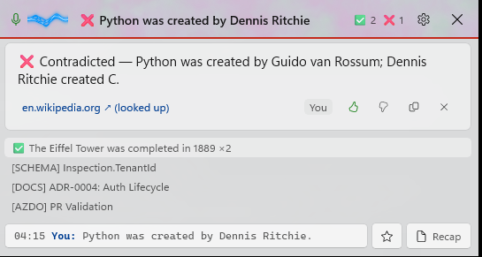
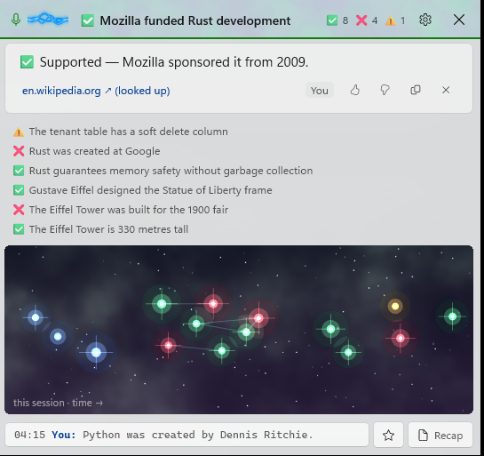
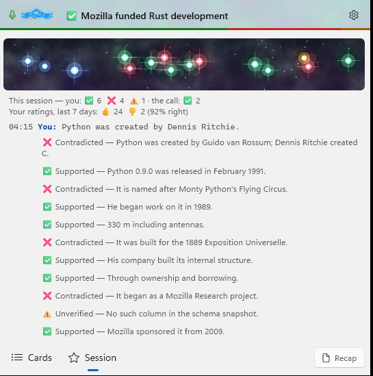
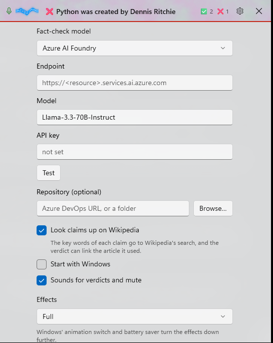
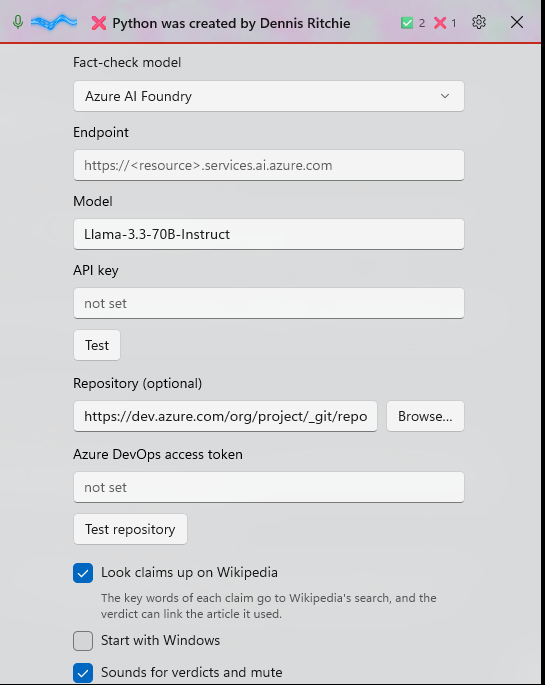
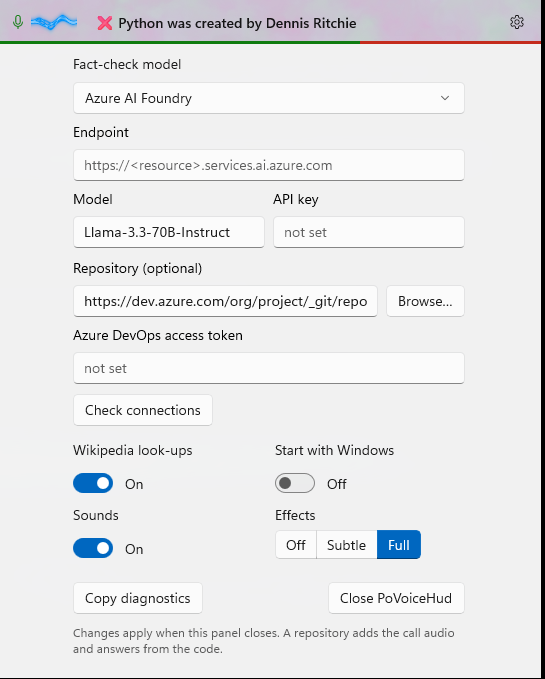
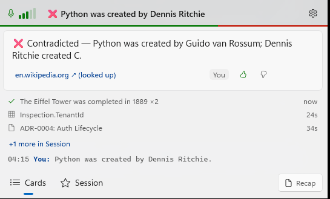

UI consolidation: U1–U10
Debug build with --demo (sample cards, no audio), captured with PrintWindow at 150 % scaling. "Before" is commit 3d4be18; "after" is the working tree on 2026-10-20. The faint colour in the pill is the effects aurora (Effects: Full).
The panel at rest: Cards
Before

After
 1
2
3
4
5
6
1
2
3
4
5
6
- More room for the headline (U6, U10). The tally and ✕ are gone from the pill; the headline gains about 120 px. It is now a real button, so Tab and Narrator reach the panel too. Right-click the pill for the panel, Recap, Settings and Close PoVoiceHud.
- Tally as a bar (U6). The pill's bottom edge shows this session's verdicts as shares of green, red and amber. Hovering the headline gives the numbers, and so does the Session tab.
- Quieter card (U4). Copy and put-away appear only while the pointer or keyboard focus is on the card. They stay in the tab order, and right-click (or press and hold) offers Right / Wrong / Copy / Put away. Narrator reads each new answer as it arrives (U10).
- Shelf rows (U5). The bracket tags (
[SCHEMA],[DOCS]) become icons. A fact check shows its verdict instead. Each row now shows how long ago it was said, and the shelf holds three rows instead of six. - +N more in Session (U5). Says how many older cards the Session tab holds, and opens it.
- One switch (U8). Cards | Session replaces the transcript button and ✦, so only one view is ever open.
The whole session in one place (U7)
Before: shelf + 190 px constellation + transcript, all at once

After: Session tab
 1
2
3
4
1
2
3
4
- Constellation strip. It is 76 px instead of 190, with the stars spread over less margin. Hover still names a star and a click brings its card back. The axis caption moved into the tooltip, so it no longer covers the first stars.
- Tally. Split by you and the call, plus your ratings for the last 7 days. Before, this was only in a tooltip.
- Timeline. Every line heard (up to 40 entries, lines and cards together), with the speaker in colour…
- …and the cards it brought underneath. Click one to make it the focus card again. Any card of the session can now come back, not only the six on the shelf. A recap opens this tab. A new card that opens the panel shows Cards.
After, with a long session (--fx constellation)

The timeline scrolls inside the panel. The window does not grow past the screen's work area, and the tabs and Recap stay in view (U9).
Settings
Before

After
 1
2
3
4
5
6
1
2
3
4
5
6
- Model and API key share a row. In the demo the model isn't set up yet, so its fields are open. Once it works, it folds to one line with a status dot.
- Repository folded (U2). It shows
org/project/repo, the folder's name, or None — fact-checking only, with Change…/Add…. An Azure DevOps URL without a token stays open, and so does one with an error. The dot is grey before a check, then green or red. - One Check connections (U1). It replaces Test and Test repository, checking the model and the repository (when there is one) in parallel. Each result shows under its own line.
- 2×2 switches (U3). Wikipedia, Start with Windows and Sounds. Their explanations moved to tooltips, and the Wikipedia privacy note is also the switch's help text for Narrator.
- Effects as a three-part switch (U3). Off | Subtle | Full replaces the drop-down. Pressing the level that is already on leaves it on.
- Close PoVoiceHud lives here now that the pill has no ✕ (U6).
Before, every field unfolded (--all)

Cut off at a fixed 640 px: Effects, Copy diagnostics and the note are out of reach.
After, every field unfolded

All of it fits. The flyout's scroll height now comes from the screen's work area each time it opens (U9).
Effects: Off

The same layout with the plain meter bars. The verdict bar and the panel's backing are unaffected by the effects level.
All ten, and how each was checked
| # | Change | Checked by |
|---|---|---|
| U1 | One Check connections; status dots | Screenshot; SettingsViewModel.Check reuses the tested Test / TestRepo |
| U2 | Repository folds to one line | Screenshot; unit test (summary, URL without token stays open) |
| U3 | 2×2 toggle switches; segmented Effects | Screenshot |
| U4 | Copy/✕ on hover or focus; card context menu | Screenshot of the resting state. The hover and menu states weren't captured, because synthetic input isn't sent to the desktop. |
| U5 | Icon + title + age rows; shelf of 3; +N more | Screenshot; unit test (three rows, ages, +4 more) |
| U6 | Verdict bar; Close moved to right-click and Settings | Screenshot; unit test (verdict counts) |
| U7 | Session tab: stars, tally, timeline; any card can come back | Screenshot; unit tests (timeline order and cap, bringing back an off-shelf card) |
| U8 | Cards | Session switch | Screenshots of both tabs; unit test (a card that opens the panel shows Cards) |
| U9 | Height capped at the work area; timeline scrolls; bottom-docked pill grows upwards; settings fit the screen | Screenshots (settings fully visible; long timeline scrolls). The bottom-docked growth wasn't tried by hand; it's on the manual test list. |
| U10 | Headline button; Narrator live region; brighter constellation text; a backing behind panel text; high-contrast resources | Build and screenshots. Not yet tried with Narrator or a high-contrast theme. |